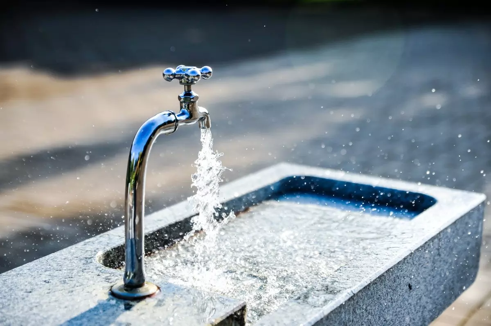
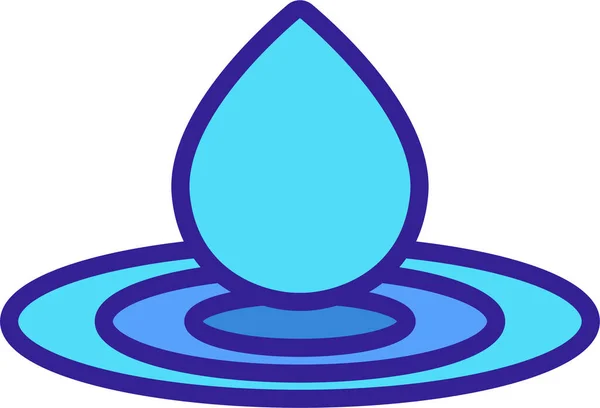
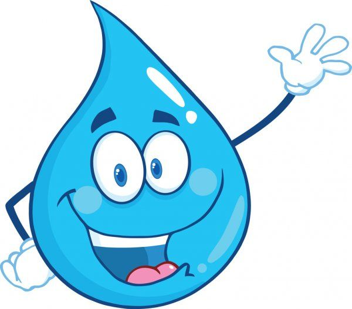

Bem-vindo ao Portal de Informações sobre Racionamento de Água

Bem-vindo ao site oficial de informações sobre o racionamento de água em
Araguaína. Aqui você encontrará informações importantes sobre o
cronograma de racionamento, dicas para economizar água e respostas para
perguntas frequentes.
Cronograma de Racionamento

Confira abaixo o cronograma de racionamento para cada região da cidade:
Zona Norte: Segunda e Quinta, das 8h às 18h
Zona Sul: Terça e Sexta, das 8h às 18h
Zona Leste: Quarta e Sábado, das 8h às 18h
Zona Oeste: Quinta e Domingo, das 8h às 18h
Dicas para Economizar Água

Feche a torneira enquanto escova os dentes
Tome banhos mais curtos
Reuse a água da máquina de lavar para limpar calçadas
Conserte vazamentos imediatamente
Use a descarga do vaso sanitário apenas quando necessário
Perguntas Frequentes
Por que o racionamento é necessário?
O racionamento é necessário devido à escassez de chuvas e ao baixo
nível dos reservatórios de água da cidade.
Quanto tempo vai durar o racionamento?
A duração do racionamento dependerá das condições climáticas e do
nível dos reservatórios. Atualizaremos esta informação regularmente.
Como posso me preparar para os períodos de racionamento?
Armazene água em recipientes limpos durante os períodos em que o
fornecimento estiver disponível e siga nossas dicas de economia de
água.
Entre em Contato
Para mais informações ou em caso de emergências, entre em contato
conosco:
Telefone: (63) 3411-7000
Email: agua@araguaina.to.gov.br
Endereço: Rua 25 de Dezembro, 265 - Centro, Araguaína - TO, 77803-040